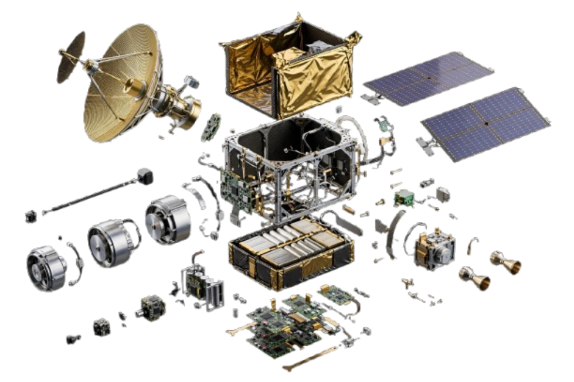

Communication
Satellite communication systems support connectivity across large distances and strengthen national communication infrastructure.

ENGINEERING SYSTEMS BEYOND EARTH.
Pakistan's satellite systems are designed to support communication, Earth observation, scientific research and technological development beyond Earth.
Spacecraft that extend Pakistan's ability to observe, connect and explore beyond Earth.
Seeing our changing world.
Expanding what we know.

Space-based systems extend what Pakistan can observe, communicate and understand from above.
Satellite communication systems support connectivity across large distances and strengthen national communication infrastructure.
Observation satellites collect imagery and data that can support agriculture, mapping, environmental monitoring and disaster response.
Space-based research contributes to scientific knowledge, technological development and environmental studies.
Pakistan's journey in space continues through communication, observation, research and technological innovation.
Explore Research